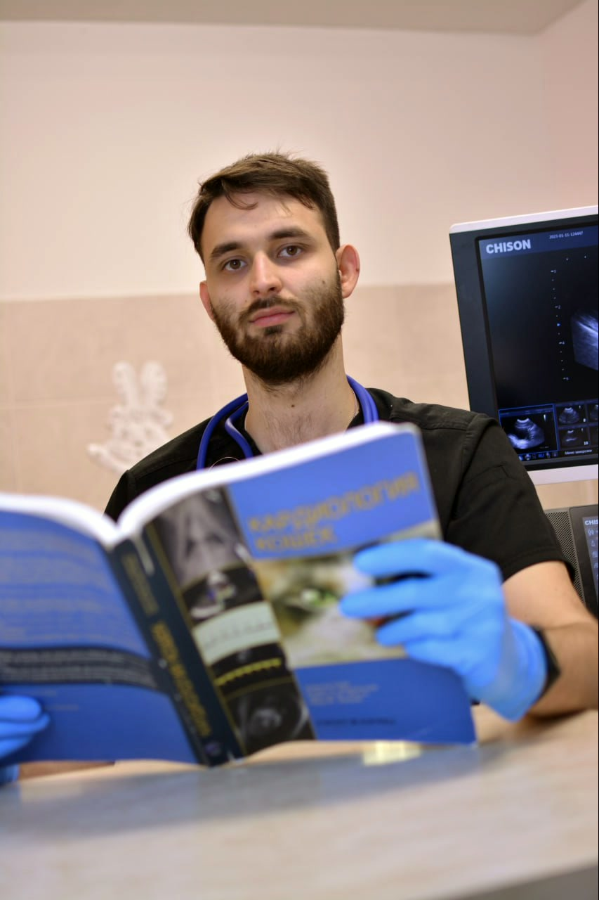
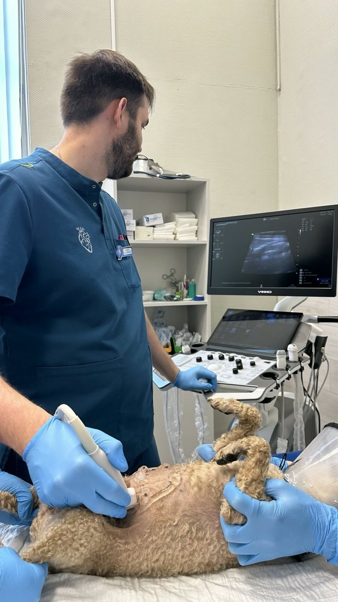

Ветеринарный врач на домПолоцк и Новополоцк РоманЧертопалов.
Приезжаю к кошкам и собакам на дом в Полоцке, Новополоцке и окрестностях. Консультирую онлайн, когда нужно обсудить состояние питомца.

Три направления, в которых я работаю как специалист
Специализация — это профиль врача. Какие исследования и процедуры возможны на выезде, уточняю перед записью.
- 01
Кардиология
Болезни сердца и сосудов.
- 02
Нефроурология
Болезни почек и мочевыводящих путей.
- 03
Функциональная диагностика
Ультразвуковое исследование (УЗИ).

Как я работаю
Спокойно, бережно и по доказательной медицине
Pet‑friendly приём
Спокойно и бережно — с вниманием к характеру и самочувствию питомца.
Только доказательная медицина
Обоснованные назначения и понятные объяснения: что делаем и зачем это нужно.


Что делаю на дому и онлайн
Помощь кошкам и собакам. Нужную помощь и условия выезда согласуем перед записью. Цены появятся здесь перед запуском.
- 01
Осмотр и консультация
Осмотр питомца на дому, обсуждение его состояния и дальнейших действий.
- 02
Вакцинация
Профилактические прививки кошкам и собакам. Условия проведения уточняются заранее.
- 03
Забор анализов
Забор биоматериала на дому. Перечень исследований и подготовку согласуем перед выездом.
- 04
Лечебные процедуры
Назначенные ветеринаром процедуры и уход. Возможность выполнения дома обсуждается отдельно.
- 05
Онлайн-консультация
Расскажите, что беспокоит питомца, и покажите назначения или результаты обследований. Обсудим следующие шаги и необходимость очного приёма.
Как проходит выезд
Возможности домашнего приёма ограничены: некоторые исследования и лечение требуют оборудования клиники. Подходит ли выезд, обсуждаем до записи.
- 01
Расскажите о питомце
Назовите город и адрес, возраст животного и причину обращения.
- 02
Согласуем выезд
Уточним возможность помощи на дому, время визита и предполагаемую стоимость.
- 03
Приеду на приём
Осмотрю питомца, проведу согласованные процедуры и объясню дальнейшие действия.
Выезжаю по Полоцку, Новополоцку, Полоцкому району и ближайшим населённым пунктам. Более дальние адреса — по согласованию.
Позвоните
или напишите.
Назовите город и адрес, возраст животного и причину обращения. Обсудим, подходит ли выезд или лучше начать с онлайн-консультации.